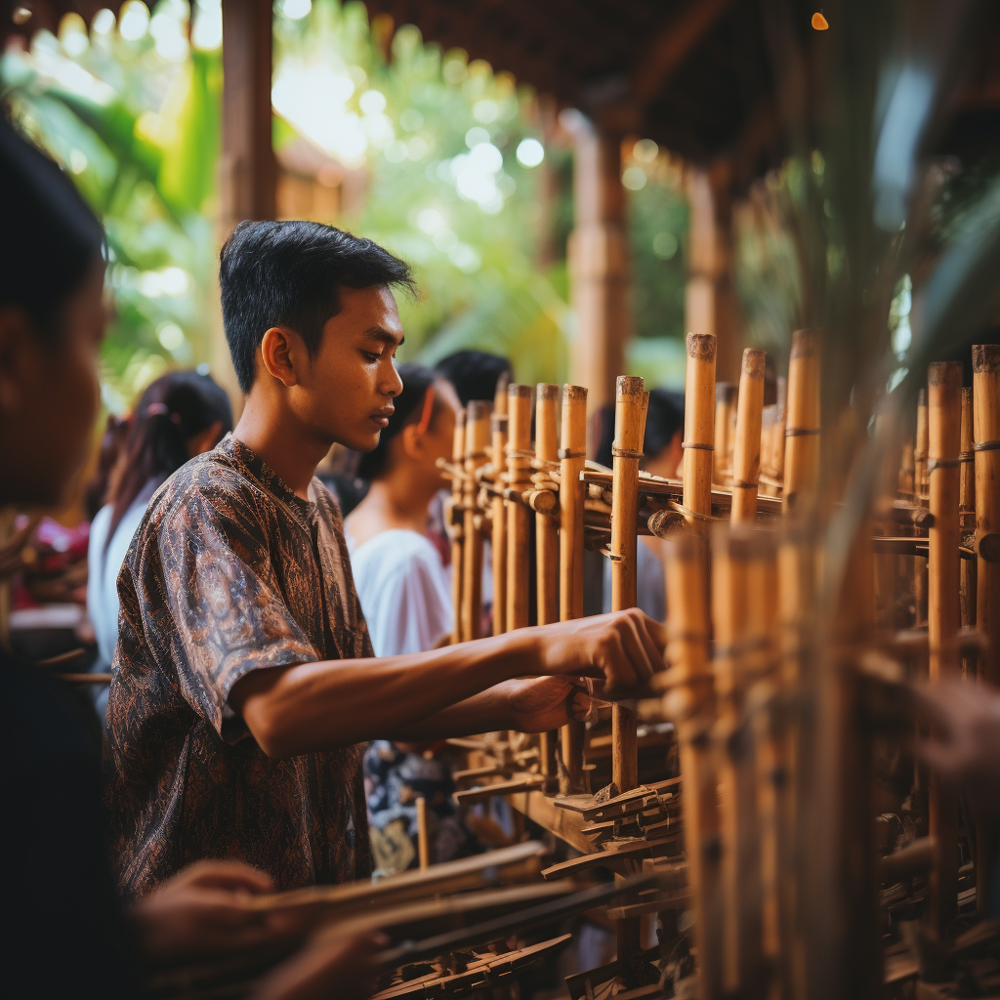

Angklung Melodies
Experience the joyous sounds of the angklung ensemble as enthusiastic musicians skillfully play these traditional bamboo instruments. As a UNESCO-recognized intangible cultural heritage, angklung music showcases the harmonious spirit of communal participation. The collective performance of the ensemble, led by a conductor, produces intricate melodies, evoking a sense of unity and togetherness. The melodious notes echo the soul of Indonesia, bridging generations and cultures in a symphony of peace and harmony.